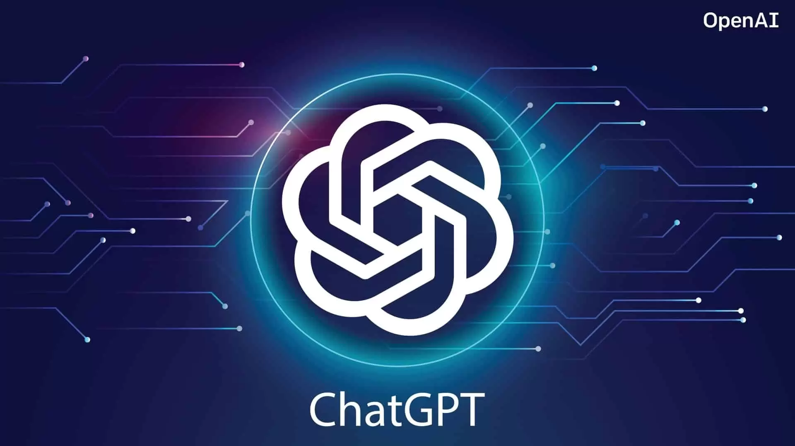
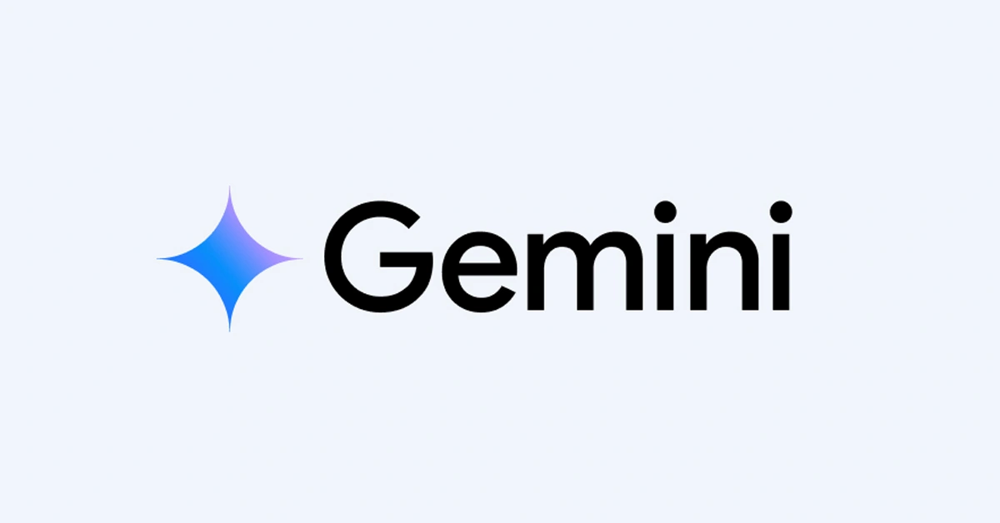

Danh sách ứng dụng AI tiêu biểu
- ChatGPT - AI trò chuyện
- Gemini - AI đa phương thức
- Claude AI - AI đám mây
Ứng dụng ChatGPT
Truy cập ChatGPT
- ChatGPT là mô hình trí tuệ nhân tạo (AI) dạng hội thoại do OpenAI phát triển. Nó dựa trên các mô hình ngôn ngữ lớn (LLM), được huấn luyện để hiểu và phản hồi ngôn ngữ tự nhiên như con người, hỗ trợ các tác vụ từ trả lời câu hỏi đến viết lách và lập trình.
Nguyên lý hoạt động cơ bản
• Mô hình ngôn ngữ lớn (LLM): Sử dụng kiến trúc Transformer để xử lý và dự đoán từ tiếp theo trong chuỗi văn bản dựa trên khối lượng dữ liệu khổng lồ đã học.
• Học tăng cường từ phản hồi của con người (RLHF): Trải qua quá trình tinh chỉnh sử dụng đánh giá từ con người để các phản hồi trở nên tự nhiên, an toàn và chính xác hơn.
Ưu điểm nổi bật
• Tương tác linh hoạt: Tiếp nhận thông tin, nhận lỗi, phản biện giả định sai và từ chối các yêu cầu không phù hợp.
• Đa nhiệm: Dịch thuật, tóm tắt văn bản, viết code, tạo nội dung sáng tạo và hỗ trợ nghiên cứu tài liệu.
Hạn chế cần lưu ý
• Độ chính xác (Ảo giác): AI có thể đưa ra các thông tin nghe rất thuyết phục nhưng lại sai sự thật.
• Phụ thuộc dữ liệu huấn luyện: Phản hồi bị giới hạn và phụ thuộc vào tập dữ liệu đầu vào.
Ứng dụng Gemini
Truy cập Gemini
- Gemini (trước đây là Google Bard) là mô hình ngôn ngữ lớn và trí tuệ nhân tạo đa phương thức (Multimodal AI) do Google DeepMind phát triển. AI này được xây dựng để hiểu, xử lý và tích hợp liền mạch nhiều định dạng thông tin bao gồm: văn bản, hình ảnh, âm thanh, video và mã code.
Nguyên lý hoạt động cơ bản
• Kiến trúc đa phương thức (Multimodal Native): Ngay từ khi thiết kế, Gemini được huấn luyện trên nhiều định dạng dữ liệu khác nhau. Thay vì chuyển đổi hình ảnh hoặc âm thanh thành văn bản trước khi hiểu, nó xử lý tất cả các luồng dữ liệu này cùng lúc trong cùng một không gian.
• Cơ chế suy luận (Reasoning & Agents): Gemini sử dụng cơ chế "suy luận trước khi phản hồi", có khả năng lập kế hoạch, kiểm tra lỗi từng bước và tự động gọi các tiện ích mở rộng khi cần thiết.
• Khai thác dữ liệu trực tiếp: Trí tuệ của Gemini được kết nối sâu với Google Search và hệ sinh thái Google Workspace (Gmail, Docs, Drive), cho phép thu thập thông tin thời gian thực.
Ưu điểm nổi bật
• Khả năng đa phương thức xuất sắc: Đọc và hiểu các tệp dữ liệu phức tạp như biểu đồ, hình ảnh y tế, giọng nói, video dài và chuyển đổi giữa chúng rất mượt mà.
• Tích hợp liền mạch: Đồng bộ chặt chẽ với các ứng dụng trong Google Workspace (Docs, Sheets, Gmail, Drive) giúp tối ưu hóa công việc văn phòng.
• Cập nhật dữ liệu thời gian thực: Nhờ kết nối trực tiếp với công cụ tìm kiếm của Google, câu trả lời thường bám sát các sự kiện và thông tin mới nhất.
• Cửa sổ ngữ cảnh (Context Window) lớn: Cho phép bạn tải lên tài liệu có khối lượng văn bản rất lớn cùng lúc mà không bị quên mất các chi tiết ở đầu đoạn.
Hạn chế
• Nguy cơ sai lệch thông tin (Hallucination): Dù được cải tiến khả năng suy luận, người dùng trên các diễn đàn công nghệ thường xuyên phản ánh việc Gemini đôi khi bịa đặt các thông tin sai lệch nhưng lại trình bày rất thuyết phục.
• Độ trễ: Các câu lệnh quá phức tạp hoặc yêu cầu khả năng suy luận chuyên sâu (Advanced Reasoning) có thể mất nhiều thời gian chờ đợi phản hồi hơn.
• Tính ổn định: Trong các tác vụ mang tính đặc thù cao như lập trình chuyên sâu, đôi khi nó có thể đưa ra mã nguồn thiếu hoàn thiện.
Lưu ý khi sử dụng
• Kiểm chứng thông tin: Không nên tin tưởng tuyệt đối 100% vào AI, đặc biệt trong các lĩnh vực yêu cầu độ chính xác tuyệt đối như y tế, pháp lý hoặc số liệu thống kê.
• Quyền riêng tư (Privacy): Khi sử dụng Gemini phân tích dữ liệu cá nhân, hãy lưu ý giới hạn bảo mật thông tin nội bộ của công ty.
• Lựa chọn gói dịch vụ: Hãy tận dụng bản miễn phí (thường chạy các mô hình Flash) cho các tác vụ đơn giản. Nếu cần lập trình, phân tích dữ liệu lớn hay truy cập "Deep Research", bạn nên xem xét nâng cấp gói Google AI để sử dụng các mô hình mạnh hơn (như Pro hoặc Ultra).
Ứng dụng Claude AI
Truy cập Claude AI- Cloud AI (Trí tuệ nhân tạo trên đám mây) là sự kết hợp giữa Điện toán đám mây và Trí tuệ nhân tạo. Nó cho phép các thuật toán AI/Machine Learning hoạt động trên hạ tầng máy chủ của nhà cung cấp, giúp người dùng truy cập và xử lý dữ liệu quy mô lớn qua Internet mà không cần đầu tư máy tính đắt tiền.
Nguyên lý hoạt động cơ bản
• Tiếp nhận dữ liệu: Dữ liệu từ người dùng hoặc thiết bị đầu cuối được gửi lên hệ thống đám mây qua mạng Internet.
• Xử lý & Tính toán: Các mô hình AI được lưu trữ trên các cụm máy chủ mạnh mẽ (được trang bị GPU, TPU chuyên dụng) để phân tích, học hỏi và đưa ra kết quả.
• Phản hồi: Kết quả được hệ thống đám mây gửi trả lại cho người dùng hoặc ứng dụng đầu cuối.
Việc xử lý thường diễn ra theo mô hình SaaS (Phần mềm như một dịch vụ) hoặc API, trong đó người dùng chỉ cần giao tiếp với giao diện mà không cần biết các thuật toán phức tạp chạy ngầm.
Ưu điểm nổi bật
• Không cần phần cứng khủng: Tiết kiệm chi phí đầu tư hạ tầng ban đầu; người dùng chỉ việc trả phí theo mức sử dụng thực tế (Pay-as-you-go).
• Khả năng mở rộng linh hoạt: Có thể tăng/giảm tài nguyên tính toán ngay lập tức tùy thuộc vào khối lượng công việc nặng hay nhẹ.
• Cập nhật dễ dàng: Mọi bản vá, tính năng mới hay mô hình AI nâng cấp đều được nhà cung cấp đám mây tự động cập nhật.
• Sức mạnh tính toán khổng lồ: Xử lý tập dữ liệu cực lớn và thực hiện các tác vụ phức tạp (như huấn luyện mô hình sâu) chỉ trong thời gian ngắn.
Hạn chế & Lưu ý
• Phụ thuộc vào Internet: Cần có kết nối mạng ổn định. Mất kết nối đồng nghĩa với việc không thể sử dụng hệ thống.
• Vấn đề bảo mật & Quyền riêng tư: Lưu trữ dữ liệu trên server của bên thứ ba luôn tiềm ẩn rủi ro rò rỉ dữ liệu. Các doanh nghiệp cần chính sách kiểm soát và phân quyền chặt chẽ.
• Độ trễ (Latency): Việc truyền tải dữ liệu qua lại giữa thiết bị của bạn và máy chủ đám mây có thể gây ra độ trễ. Điều này không phù hợp với các ứng dụng yêu cầu phản hồi tức thì (ví dụ: phanh tự động của xe tự lái).
• Rủi ro chi phí: Dù tiết kiệm ban đầu, việc không giám sát kỹ lượng có thể dẫn đến hóa đơn thanh toán "khủng" nếu sử dụng tài nguyên vượt mức kiểm soát.